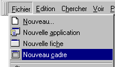
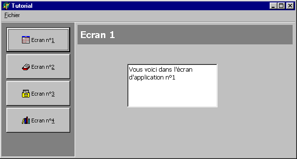

SYSTEME DE FENETRAGE DYNAMIQUE A BASE DE FRAMES
par Didier Largange
Niveau
requis : moyen, avec quelques des bases de programmation objet
pour aller plus loin.
Outils : Delphi 5 ou supérieur
INTRODUCTION
Si vous estimez vous être suffisament battu avec des fenetres MDI, des TPanel et des TPageControl pour parvenir à réaliser des interfaces d'application modernes et sophistiquées : ce tutoriel est pour vous.
TFrame
(cadre) est une merveille de composant intégré par
Borland dans la version 5 de Delphi, je crois qu'avec du recul qu'il
valait la mise à jour à lui seul. L'intérêt
qui lui à été porté est essentiellement
sur sa capacité à servir de conteneur pour des groupes
fonctionnels de composants interagissant entre eux comme dans une
fenetre. Le must étant la possibilité de
capitaliser ces “modules”
en les plaçant dans votre palette de composants.
Cela étant
dit, les cadres ne sont pas limités à de “petits”
groupes de composants, il peuvent très bien servir en tant que
portions de fenêtres, et êtres intégrés “en
live” dans votre application et non à l'état
“figé” par la palette de composants.
Une fois
terminé ce tutoriel, vous devriez être à même
de réaliser en quelques lignes de code une interface style
Outlook, flexible, maintenable et évolutive.
CREATION DU PROJET
- menu Fichier + Nouvelle
application
- nommez la fiche principale “Fprincipale”
-
menu Fichier + enregistrer sous ... Principale.pas
- menu Fichier
+ enregistrer le projet sous ... Tuto_frame.dpr
CRÉATION DU MODÈLE DE FRAME
- menu Fichier + Nouveau cadre

- insérez le code suivant :
interface
procedure
Afficher; virtual;
implementation
procedure
TfrmModele.Afficher;
begin
// rien
end;
-
modifiez la propriété Name du frame en
“FrmModele”
-
ajouter un panel avec pour propriétés : Align
:= alTop, Name := PanelTitre, Color := clGray
- menu enregistrer sous ... FrModele.pas
AJOUT D'UN NOUVEAU FRAME A L'APPLICATION
-
menu Fichier + Nouveau + onglet tuto_frame + sélectionnez
FrmModele (hériter) + OK
-
modifiez la propriété PanelTitre.Caption
en “Ecran n°1”
-
modifiez la propriété Name du frame en
“FrmEcran1”
-
précisez les opérations à effectuer à
l'affichage en surchargeant (override) la méthode
Afficher:
interface
...
public
procedure
Afficher; override;
...
implementation
procedure
TfrmEcran1.Afficher;
begin
inherited;
Memo1.Lines.Add('Vous
voici dans l''écran d''application n°1');
end;
- enregistrez l'unité sous “FrEcran1.pas”
CRÉATION DE LA FENÊTRE PRINCIPALE
- Créez une interface selon votre goût en reservant simplement un panel “PanelFrame” pour servir de zone d'affichage de vos écrans

-
Déclarez dans la section private une variable
select_frame de type TFrmModele qui pointera sur le frame affiché
-
ajoutez FrEcran1 à la clause uses de la section
implémentation
- Nommez
“MenuClick” l'évênement OnClick d'appel de
l'écran n°1
-
Ci-dessous le code dont voici l'explication :
Dans
MenuClick(...) on commence par detruire le Frame actif s'il y en a
un.
Puis on crée dynamiquement le nouveau frame du
type voulu, tout en l'affectant à select_frame. Cette
affectation est possible puisqu'il y est de type ancêtre
de FrmEcran1.
On n'oublie pas ensuite d'initialiser la propriété
Parent à PanelFrame de façon à
positionner notre Frame dans la zone qui lui a été
réservée.
Ensuite, l'appel à la méthode
virtuelle Afficher permet d'initialiser le contenu du
frame.
Enfin, à la destruction de la fenêtre
principale OnDestroy, FreeAndNil libère le dernier
Frame affiché.
interface
uses
FrModele;
type
TFPrincipal =
class(TForm)
...
procedure MenuClick(Sender:
Tobject);
procedure FormDestroy(Sender:
Tobject);
private
select_frame
: TFrmModele;
public
end;
var
FPrincipal:
TFPrincipal;
implementation
uses
FrEcran1;
procedure TFPrincipal.MenuClick(Sender:
Tobject);
begin
FreeAndNil(select_frame);
if
Sender = Button1 then select_frame :=
TfrmEcran1.Create(self)
else Exit;
select_frame.Parent
:= PanelFrame;
select_frame.Afficher;
end;
procedure
TFPrincipal.FormDestroy(Sender:
Tobject);
begin
FreeAndNil(select_frame);
end;
CREATION D'AUTRES ECRANS
Répétez la procédure AJOUTER UN FRAME À L'APPLICATION
N
étant le numéro de l'écran que vous souhaitez
ajouter, placez-vous dans l'unité Principal.pas
-
menu Fichier + Utiliser l'unité ... FrEcranN
-
ajoutez la ligne de code suivante dans l'évênement
MenuClick(...)
else if Sender = ButtonN then select_frame := TFrmEcranN.Create(self)
- n'oubliez pas de conncter l'evenement OnClick du ButtonN a MenuClick(...) !
- et c'est tout !
LE RESULTAT
Sources ci-joint :
frames1.zip : Codes sources du tutoriel
frame2.zip
: Version
améliorée incluant :
- procédure permettant
la fermeture du frame en utilisant un message Windows envoyé
à la fenêtre principale
- gestion d'une grille dans
l'écran 2
- ajout d'un écran 21, hérité
de l'écran2 avec ajout de nouvelles fonctionnalités

GLOSSAIRE
Héritage
Création
d'un composant à partir d'un autre composant pré-existant.
Dans notre cas, l'interêt est de récupérer
automatiquement les personnalisations du composant ancêtre,
mais aussi de ne pas dupliquer inutilement du code.
Exemple
: la méthode FrmEcran1.Afficher
fait tout d'abord appel au code de FrmModele (inherited), puis
exécute sont propre code.
Grâce à ce
mécanisme, il n'est pas nécessaire de gérer
plusieurs variables au niveau de la fenêtre principale, et le
code pour chaque nouvelle fenetre est donc réduit à
1 ligne + 1 clause uses !!!
Génération
dynamique
Le fait de ne pas laisser à Delphi le soin
d'auto-créer les Frames en les plaçant par avance dans
la fiche principale, mais de les créer nous même quand
il en est besoin. Nous économisons ainsi de la mémoire
et du temps au démarrage de l'application.
CONCLUSION
Ce
mode d'utilisation des frames très puissant et souple
d'utilisation. Il permet d'économiser beaucoup de lignes de
code et d'accélérer de beaucoup la génération
et la maintenance des fenêtres “répétitives”
dans une application.
En s'appuyant sur le polymorphisme,
l'héritage, et la génération dynamique des
Frames, il est possible d'affiner bien d'avantage cet embryon de
gestionnaire de fenêtrage.
Voici quelques pistes :
enrichir le modele de base avec des composants qui seront présents dans toutes les frames héritées. Notamment avec les TimageList, c'est là une façon d'économiser des ressources (voir le fichier .DFM d'un composant hérité).
mise à jour automatique du style de tous les écrans à partir de la fenêtre ancêtre, à la conception comme à l'exécution ! Très pratique pour les options d'affichage ou de couleurs.
création d'un tableau ou du'une collection de TFrmModele pour stocker les fenêtres déjà ouvertes et accélérer l'affichage dans
création d'une ou plusieurs classes intermédiaires entre FrmModele et FrmX pour décliner d'autres types d'écran à partir de la même classe de base
ajout de TActionList, d'évênements et de méthodes dans la classe ancêtre pour regrouper des comportements : OnResize, imprimer, exporter, ...
et caetera !
Consultez frame2.zip pour quelques exemples.
Ci-joints :
frame1.zip : code source du tutoriel
frame2.zip : code source d'une version plus évoluée
Ci-
Alors, bonne programmation, et j'espère que ce tutorial vous sera utile pour épater encore davantage vos clients et gagner en productivité. N'hésitez pas à me faire par de vos remarques.
Didier Largange - LOGICANTILLES